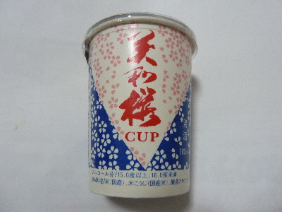

美和桜のCUP酒。
2016/10/22
道の駅フォレスト君田に寄り道して、君田温泉森の泉で買い物をしました。
ここは道の駅って感じじゃなくて、温泉ですね。
温泉に入るわけじゃないので、場違いな感じがしました。

お手頃価格のカップ酒を購入しました。
お酒の味はよくわからないですが、スッキリ味で癖がないと思いました。
広島県三次市三和町下板木262
2016/10/22
道の駅フォレスト君田に寄り道して、君田温泉森の泉で買い物をしました。
ここは道の駅って感じじゃなくて、温泉ですね。
温泉に入るわけじゃないので、場違いな感じがしました。

お手頃価格のカップ酒を購入しました。
お酒の味はよくわからないですが、スッキリ味で癖がないと思いました。